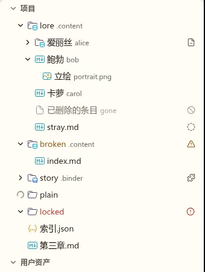
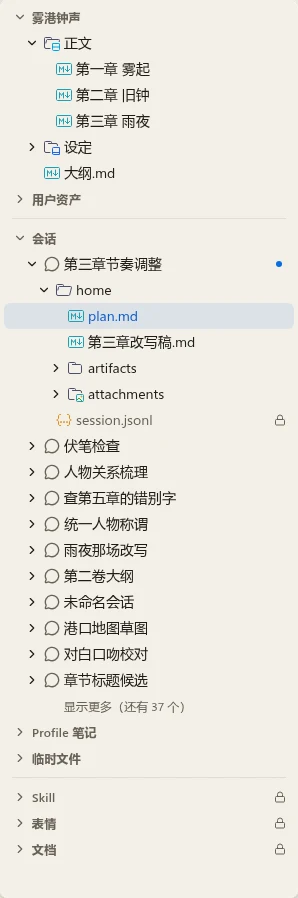
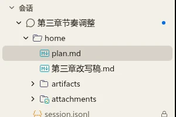
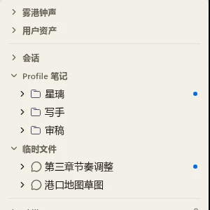
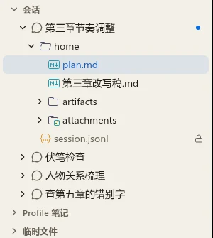
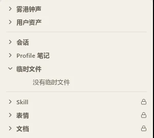

第 1 轮：资源管理器加上 Agent 的目录
现状

整体照这张图排？
推荐同意：三组、只开项目与当前会话，八个根一屏看得全。

当前会话、当前 Profile 怎么标？
推荐 A 行尾圆点：会话、Profile、临时文件三处都能用同一个记号，也不和选中行的强调色文字撞。


只读的根怎么标？
推荐 A 行尾锁：和 session.jsonl 的只读标记同一个记号、同一列。
会话少、临时文件为空时照这样画？
推荐同意：会话不超过 10 个时不出“显示更多”；临时文件为空写一行淡字，不另起空态版式。


已定
- 除 projects:// 外的注册方案都显示；根固定、用全局地址，不跟着会话换
- 分三组、组间一条淡线、不加组标题：作品（项目、用户资产）、Agent（会话、Profile 笔记、临时文件）、参考资料（Skill、表情、文档）
- 首次只展开项目；当前会话由“跟随当前对话”展开到 home/；之后记住手动展开
- 根用中文名，方案名只在悬停与“复制路径”里
- 会话：当前置顶、最近 10 个、末尾“显示更多（还有 N 个）”
- 会话展开后 home/ 在前并连带展开，session.jsonl 调淡、只读
- 跟随当前对话只滚进视野，拖动、改名、输入时不跳